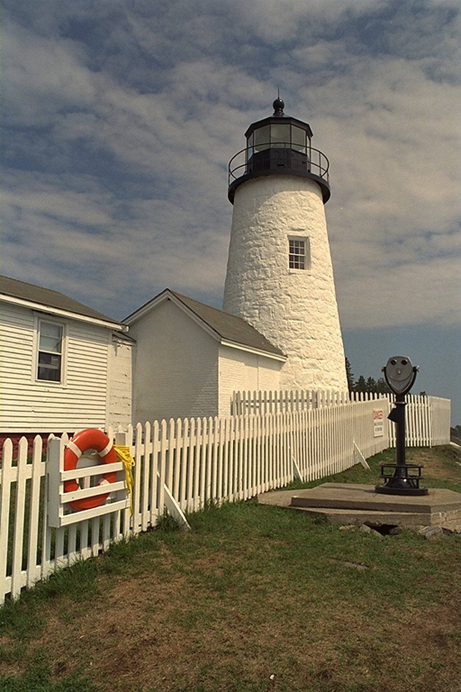
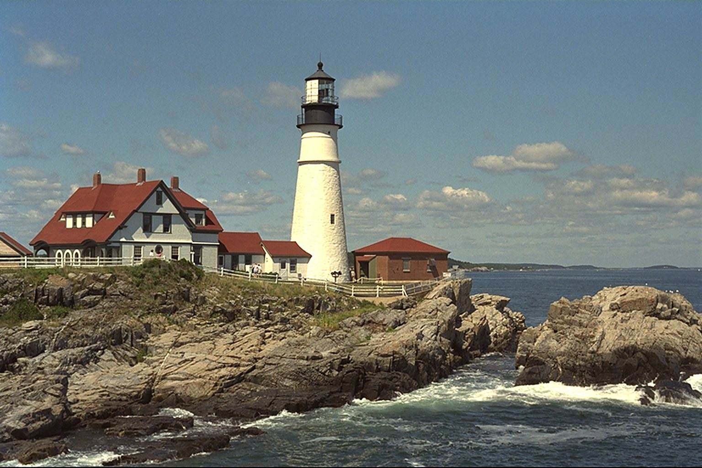

What happened
The tower is open
to everyone again.
After two years of repairs, visitors can climb to the lantern room on weekends starting this month.

The harbor landmark welcomes visitors again after a full restoration of its tower and keeper's house.
After two years of repairs, visitors can climb to the lantern room on weekends starting this month.

The harbor expects thousands of extra visitors each season.
Cracks found in the tower wall.
City and donors share the cost.
Weekend tours begin.
A safer viewing deck and a small museum.
The original lamp still guides ships.
Free entry on the first Saturday.
Tickets go on sale this week.
A trial run is planned for summer.